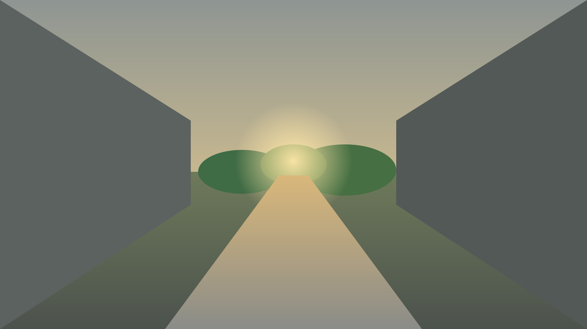
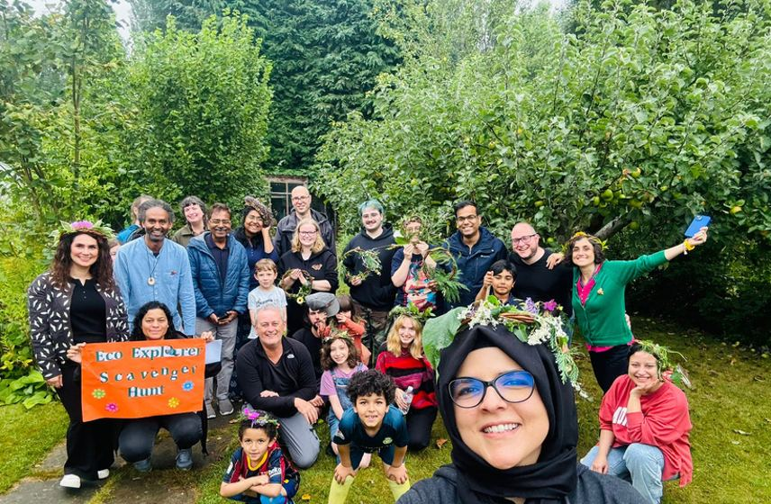
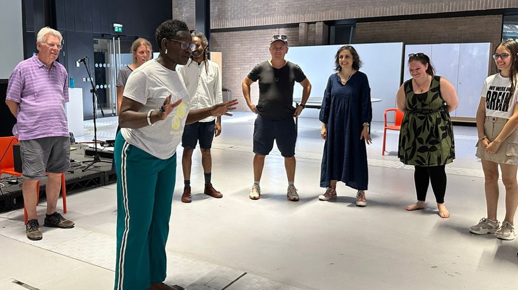
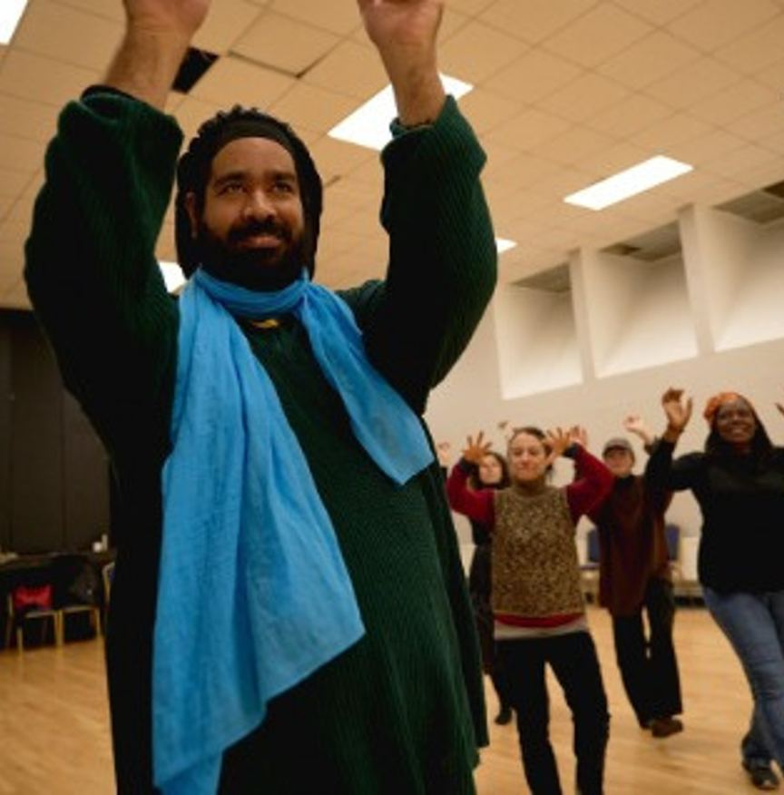
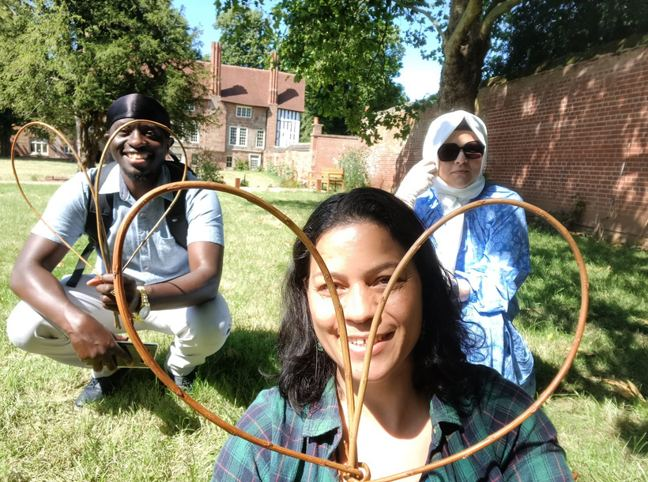

01Listen
Start with “What Matters to You?”

“EcoGPX® helped me get out of a dark spot I was in. It allowed me to reconnect with myself, with others and with the world around me and nature.”
Entering…
Open the walk in a new tabClick to start, then use arrow keys or WASD to walk.
(001) Why we exist
That garden was imagined.

Loneliness, inequality and disconnection affect how we live. We bring artists, practitioners and communities together to improve wellbeing, strengthen belonging and reconnect people with nature and place.
(002) How change happens
Start with “What Matters to You?”
Arts, movement, storytelling and cultural exchange.
Community participation and ethical technology, shaped by lived experience.



(003) 2024–25 impact
(004) What we do
(005) Be part of it
Help Intercultural Roots reach more people.
Donate. Be part of what grows next.
interculturalroots.org/make-a-donation